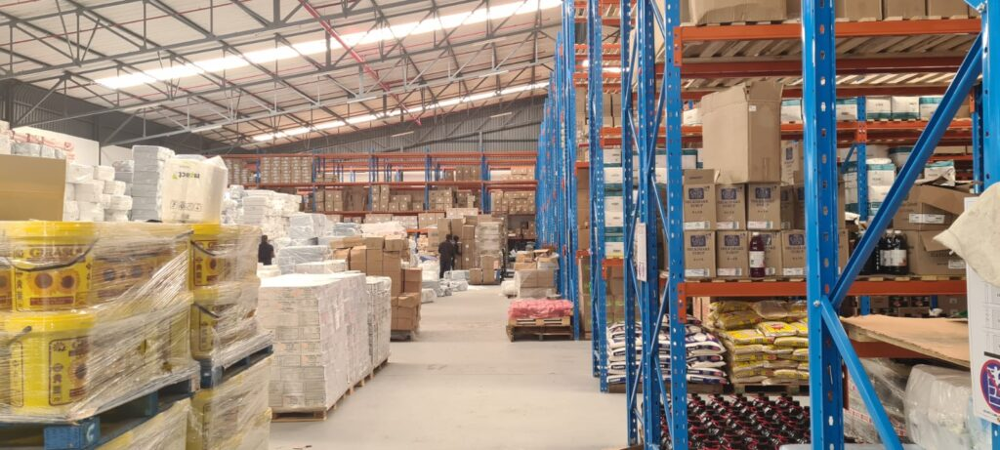
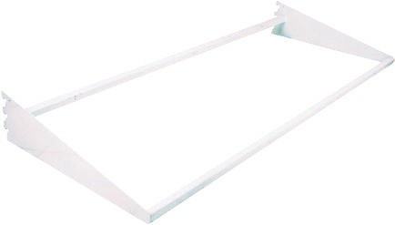
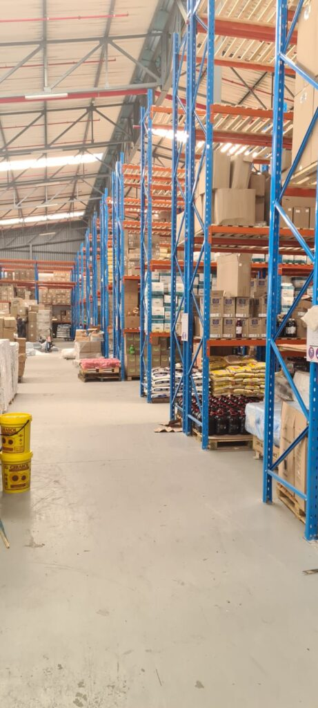
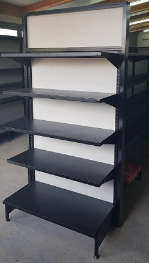
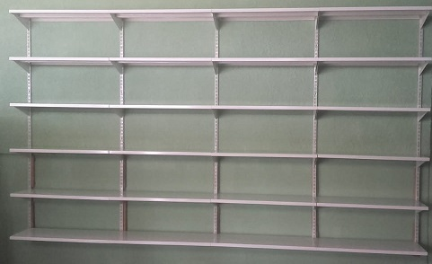
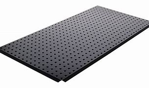

Our Products and Services

LowShelf provides shelving, racking, storage and shopfitting solutions for different business and retail environments.
Industrial Shelving and Racking

Our industrial shelving and racking solutions are designed to help businesses organise and store products efficiently.
Warehouse Storage Solutions

LowShelf provides storage solutions that can help warehouses and businesses make better use of their available space.
Shopfitting Solutions

Our shopfitting solutions are designed to help retail businesses display and organise their products effectively.
Retail Shelving

Retail shelving solutions can be used in supermarkets, shops and other retail environments to create organised product displays.
Custom Storage Solutions

Storage solutions can be customised according to the customer's premises, products and storage requirements.
Additional Storage Solutions
Storage systems can be designed to suit different commercial, industrial and warehouse requirements.